Up to 8 robot definitions (robots) are supported by the Motion Coordinator simultaneously. A robot is defined by assigning up to 6 axes to work together in a so-called kinematic group. Part of TABLE area is also used with each robot definition. Involved axes are initialized in an appropriate manner.
The ROBOT_DEFINITIONS
program contains commands configuring the kinematic groups and related axes.
This effectively turns your Motion Coordinator (controller) into a robot
controller.
The ROBOT_DEFINITIONS editor normally runs in read-only mode, because the
ROBOT_DEFINITIONS program is vital to your robot system. Hence its editing is
made explicit to ensure no accidental changes are possible.
Important: It is strongly recommended that you only edit ROBOT_DEFINITIONS program in guided mode within the dedicated editor. Changing BASIC code directly may result in corruption and code loss.
To create a Robot Definitions File:
Click the Robot Definitions File button on Motion Perfect toolbar.
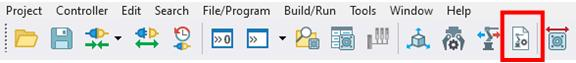
Alternatively, you can right click on Programs > New > Robot Definitions File:
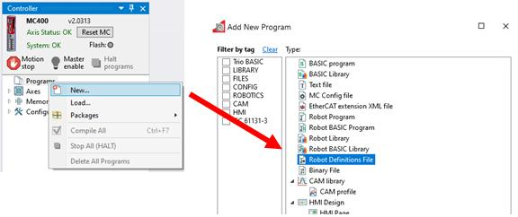
A new robot definition is added from button. A dialog box is displayed for choosing the robot type and 6 axis numbers which will define robot’s kinematic group. Axis numbers need to be in ascending order.
Even in the case of 4 or 5-axis robot (like SCARA robot) it is still needed to assign 6 axes to the kinematic group.
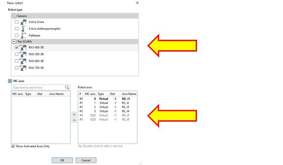
If a Trio SCARA robot is selected, then there is the option to enter calibration data
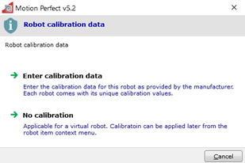
A robot definition is spread in several sections displayed on the left pane:
- Physical
- Movement
- I/O lines
- Drives
Any missing or wrong data will be marked by yellow warning sign
Note: When a Trio robot is selected the data is pre-populated based on known design information.
This data is related to physical dimensions of the robot. A scheme of the robot illustrates the link length data needed.
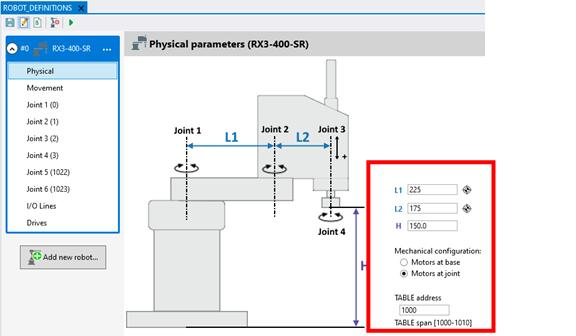
Clicking the 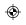 icon on any of the data fields will guide users to the Calibration data entry window as shown below:
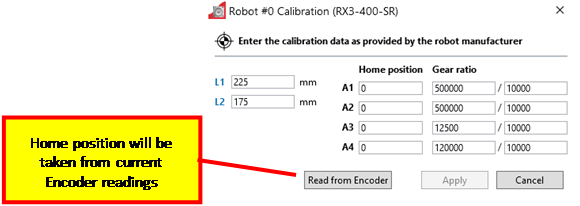
A range of TABLE data that will be used for robot definition and operation
needs to be set as well.
The TABLE range will be locked by default. No attempts to modify values in this range shall be made!
This page contains all data necessary to the movement aspects of the robot.
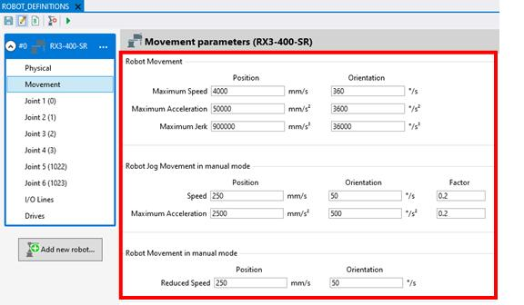
This page contains all data on each axis.
Motor setup related parameters.
Direction Invert: use this option to invert the direction of the axis without setting it up on the drive.
Parasitic Compensation: use this option to apply parasitic compensation between 2 axes. Compensation ratio is needed for this function to operate properly.
Other Parameters: populate the table list with other axis parameters setup.
Different movements and jog parameters.
When enabled – a master axis and gear ratio parameters.
An optional list of additional axis parameters and their values.
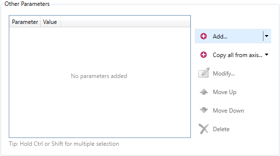
Not all axis parameters are available because some are already engaged internally. The initial values of the parameters are acquired from the MC and can be changed by the user subsequently.
Add a new parameter from button.
Copy the list of parameters and their values from another axis via button. That can avoid tedious process of defining same or a similar list again.
If any value does not match the user is given an option to resolve the collision or to cancel the copy operation.
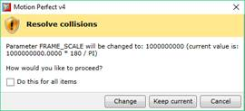
It is possible to change the order in which parameters are applied using and buttons.
Keep in mind some parameters can be dependent in a way so the order may be important.
Pressing the button, deletes a parameter from the list.
Apart from using direct values it is allowed to enter simple expressions following the Trio BASIC syntax. That gives more meaningful representation of the parameter values if necessary. For example:
131072 * 80 / 360
This page contains I/O points linked to robot operation, such as jogging individual axis.
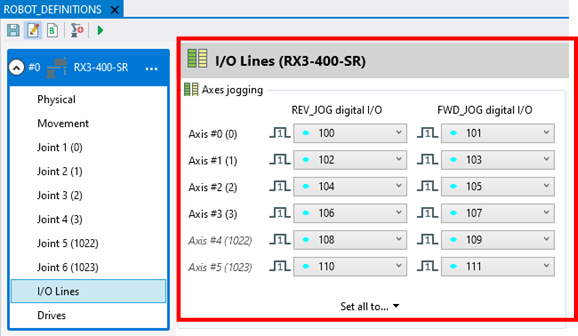
Links a digital I/O line for a reverse and forward jog operation along with line active state.
This page contains all drive setup necessary relevant to robot joints.
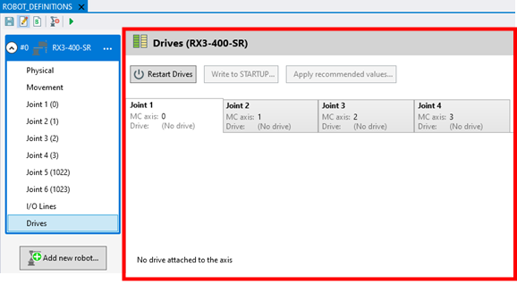
If Trio drives are used to control the robot, then this page will allow basic parameter setup for all joints.
Pressing the button deletes the robot definition.
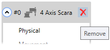
A context menu is also available from the robot definition header:
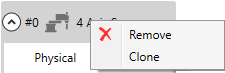